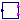
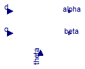
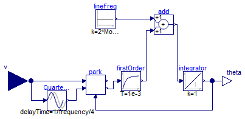
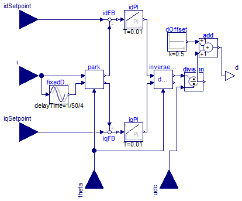

Control elements for power converters
Extends from Modelica.Icons.Package (Icon for standard packages).
| Name | Description |
|---|---|
|  SignalPWM | Generates a pulse width modulated (PWM) boolean fire signal |
| Park | Park transformation |
| InversePark | Inverse Park transformation |
| Phase-locked loop | |
| Maximum Power Point Tracking Controller | |
| ControllerInverter1phCurrent | Simple synchronous reference frame PI current controller |
| ControllerInverter1ph | Complete synchronous reference frame inverter controller |
Generates a pulse width modulated (PWM) boolean fire signal

This block provides the switching signal needed to drive the ideal switch models. It's input duty receives the desired duty cycle and the outputs fire and notFire provide the PWM and negated PWM signals.
Extends from Modelica.Blocks.Interfaces.BlockIcon (This icon will be removed in future Modelica versions, use Modelica.Blocks.Icons.Block instead.).
| Type | Name | Default | Description |
|---|---|---|---|
| Time | period | 1 | Time for one period [s] |
| Type | Name | Description |
|---|---|---|
| input RealInput | duty | |
| output BooleanOutput | fire | |
| output BooleanOutput | notFire |
Park transformation

Perform Park transformation. This transformation translates from the static reference frame (alfa-beta) to the synchronous reference frame (d-q).
Extends from Modelica.Blocks.Interfaces.BlockIcon (This icon will be removed in future Modelica versions, use Modelica.Blocks.Icons.Block instead.).
| Type | Name | Description |
|---|---|---|
| input RealInput | alpha | |
| input RealInput | beta | |
| output RealOutput | d | |
| output RealOutput | q | |
| input RealInput | theta |
Inverse Park transformation

Perform inverse Park transformation. This transformation translates from the synchronous reference frame (d-q) to the static reference frame (alfa-beta).
Extends from Modelica.Blocks.Interfaces.BlockIcon (This icon will be removed in future Modelica versions, use Modelica.Blocks.Icons.Block instead.).
| Type | Name | Description |
|---|---|---|
| input RealInput | d | |
| input RealInput | q | |
| output RealOutput | alpha | |
| output RealOutput | beta | |
| input RealInput | theta |
 PVSystems.Control.PLL
PVSystems.Control.PLL
Phase-locked loop

Phase-locked loop. Given a sinusoidal input, extract the phase.
Extends from Modelica.Blocks.Interfaces.BlockIcon (This icon will be removed in future Modelica versions, use Modelica.Blocks.Icons.Block instead.).
| Type | Name | Default | Description |
|---|---|---|---|
| Frequency | frequency | 50 | [Hz] |
| Type | Name | Description |
|---|---|---|
| input RealInput | v | |
| output RealOutput | theta |
 PVSystems.Control.ControllerMPPT
PVSystems.Control.ControllerMPPT
Maximum Power Point Tracking Controller

Maximum power-point tracking controller. Given the DC voltage and current, this controller will output a moving reference for a DC voltage control loop in order to maximize the power extracted from a PV array for a given (unknown) solar irradiation and junction temperature.
The operation of the block can be customized by setting the following parameters:
Extends from Modelica.Blocks.Interfaces.SI2SO (2 Single Input / 1 Single Output continuous control block).
| Type | Name | Default | Description |
|---|---|---|---|
| Time | sampleTime | 1 | Sample time of control block [s] |
| Voltage | vrefStep | 5 | Step of change for vref [V] |
| Power | pkThreshold | 1 | Power threshold below which no change is considered [W] |
| Type | Name | Description |
|---|---|---|
| input RealInput | u1 | Connector of Real input signal 1 |
| input RealInput | u2 | Connector of Real input signal 2 |
| output RealOutput | y | Connector of Real output signal |
Simple synchronous reference frame PI current controller

Partial current controller for monophasic inverter. Currently under construction.
Extends from Modelica.Blocks.Interfaces.BlockIcon (This icon will be removed in future Modelica versions, use Modelica.Blocks.Icons.Block instead.), Modelica.Icons.UnderConstruction (Icon for classes that are still under construction).
| Type | Name | Description |
|---|---|---|
| input RealInput | i | Sensed current |
| input RealInput | idSetpoint | Current d component setpoint |
| input RealInput | iqSetpoint | Current q component setpoint |
| input RealInput | theta | Sensed AC voltage phase |
| input RealInput | udc | Sensed DC voltage |
| output RealOutput | d | Duty cycle output |
Complete synchronous reference frame inverter controller

Complete controller for monophasic inverter. Currently under construction.
Extends from Modelica.Blocks.Interfaces.BlockIcon (This icon will be removed in future Modelica versions, use Modelica.Blocks.Icons.Block instead.), Modelica.Icons.UnderConstruction (Icon for classes that are still under construction).
| Type | Name | Default | Description |
|---|---|---|---|
| Real | ik | 0.2 | Current PI gain |
| Time | iT | 0.02 | Current PI time constant [s] |
| Real | vk | 0.2 | Voltage PI gain |
| Time | vT | 0.02 | Voltage PI time constant [s] |
| Frequency | fline | 50 | Line frequency [Hz] |
| Type | Name | Description |
|---|---|---|
| input RealInput | iac | AC current sense |
| input RealInput | vac | AC voltage sense |
| input RealInput | idc | DC current sense |
| input RealInput | vdc | DC voltage sense |
| output RealOutput | d | Duty cycle |